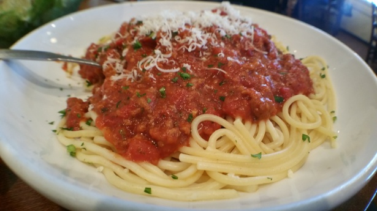

Spaghetti

Description
Spaghetti is a classic Italian pasta dish typically served with a variety of sauces, including marinara, meat sauce, or Alfredo. It's a versatile and beloved meal enjoyed by people of all ages.
Ingredients
- 8 ounces spaghetti
- 1/2 pound ground beef
- 1/2 onion, chopped
- 2 cloves garlic, minced
- 1 (14-ounce) can diced tomatoes
- 1 (6-ounce) can tomato paste
- 1 teaspoon dried basil
- 1 teaspoon dried oregano
- Salt and pepper to taste
- Grated Parmesan cheese for garnish
Steps
- Cook the spaghetti according to package instructions until al dente. Drain and set aside.
- In a large skillet, brown the ground beef over medium heat. Add chopped onions and garlic, and cook until the onions are translucent.
- Stir in diced tomatoes, tomato paste, basil, oregano, salt, and pepper. Simmer for about 10 minutes, stirring occasionally.
- Serve the sauce over cooked spaghetti, garnished with grated Parmesan cheese.
Return to Top | Return to Main Menu